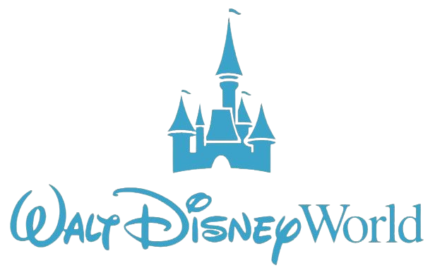

Walt Disney
Perfil
Projetos
Habilidades
Linha do Tempo
1901:
Nasce em Chicago, Illinois.
1928:
Criação do Mickey Mouse em "Steamboat Willie".
1937:
Lançamento de "Branca de Neve e os Sete Anões".
1955:
Inauguração da Disneylândia na Califórnia.
1966:
Falece aos 65 anos, deixando um legado eterno.
Curiosidades
Walt dublava o Mickey Mouse nos primeiros desenhos.
Ele foi rejeitado por um jornal por "falta de criatividade".
É o maior vencedor do Oscar até hoje, com 22 estatuas.
Walt planejou o conceito original da Disney World antes de falecer.